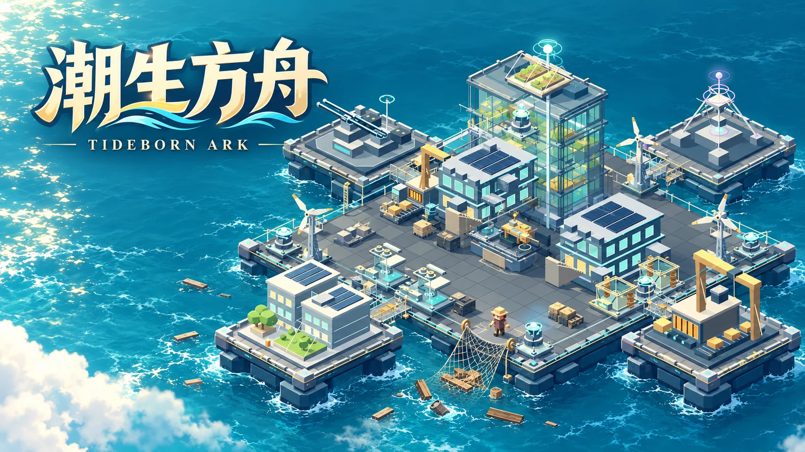

TIDEBORN ARK / 玩法介绍
潮生方舟
捞起第一块木板，把漂浮营地连成海上家园。生产线、防御塔和人工岛，都从你亲手打捞的物资开始。
免费在线 · 单人游戏简体中文 / 繁體中文 / English

怎么玩
你在海上收集漂流物，用有限库存扩建甲板、生产设施、住居与防线。生产线会争用原料，敌袭也不会等工厂完工，如何安排材料和火力是每一阶段的关键。
从这里开始
从打捞和落脚处开始
移动到漂浮物资附近打捞，按当前目标扩建甲板和基础设施。随时检查库存，把最急需的材料留给下一座关键建筑。
接起一条生产链
逐步建立加工设施，并按需求开关各条生产线。原料是共享的，缺料时先排查上游；后期可以把四座人工岛用桥梁接入基地。
边经营，边守住甲板
布置火力并修理受损设施，亲自协助打捞、加工和战斗。主线终局按游戏内时间到来，提前准备补给与防线。
主线之后，还有新的海阔天空
主线胜利后，先在安全建设阶段整理基地，再主动选择外海探索。外海有新的进攻节奏与巨兽，击败首领并清完余敌后可开启无尽远航。无尽模式每波结束后留出准备时间，每五波出现首领；产能、火控和结构升级都需要材料。
操作方式
键盘与鼠标
WASD、方向键或点击甲板移动；点击漂浮物打捞，点击敌人靠近攻击。按住空格打捞、F 攻击，R 修理、E 协助加工、B 建造、P 暂停。
手机与触屏
用触屏摇杆移动，点选漂浮物、敌人和建筑，再使用屏幕动作按钮。横屏时更容易同时查看海面和生产界面。
保存与继续
进度保存在当前浏览器，提供手动保存和阶段存档。暂停、离线或关闭自动派波不会加速游戏；其中自动派波开关只控制下一波，当前敌人和生产仍会继续。需要停下时请使用暂停。